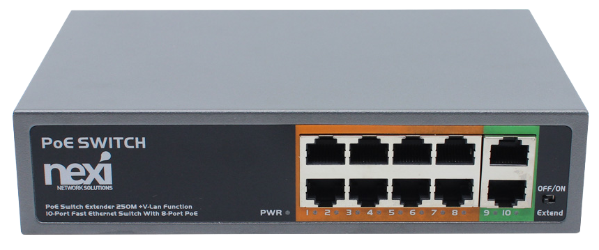

화질 Up 왜곡 개선 BOLIN B7-220WㅣPTZ 카메라


SONY Image Sensor
선명한 영상과 생생한 색상, 뛰어난 광학 정밀도의 Full HD 해상도까지 제공합니다.
Full HD 해상도
최대 1920 x 1080 Full HD 해상도에서 초당 60프레임까지 지원하며 깨끗하고 선명한 화질을 제공합니다.
2.13MP 유효화소
1920 x 1080 해상도의 Full HD 영상을 구현하는데 필요한 유효 화소 수를 의미합니다.
20배 고배율, 광학 줌
광학 렌즈를 사용하여 피사체를 확대하여 촬영하는 방식으로, 디지털 줌과 달리 화질 저하 없이 고화질로 멀리 있는 대상을 촬영할 수 있는 기능입니다. 화질 저하 없이 클리어 줌인/아웃 할 있어 먼 거리에서도 선명한 화질로 보실 수 있습니다.
화질 저하 없이 클리어 줌인/아웃 할 있어 먼 거리에서도 선명한 화질로 보실 수 있습니다.
10비트 컬러로 화질 개선
기존 8비트의 경우 색 정보가 부족하여 계단현상이 자주 일어 날 수 있어 10비트 출력은 깨짐없이 보다 좋은 색표현이 가능합니다. 화질 저하 없이 클리어 줌인/아웃 할 있어 먼 거리에서도 선명한 화질로 보실 수 있습니다.
화질 저하 없이 클리어 줌인/아웃 할 있어 먼 거리에서도 선명한 화질로 보실 수 있습니다.
편리한 PoE 기능
LAN 포트로 제품의 전원을 공급하며 IP컨트롤러와 네트워크 허브를 통해 다수의 카메라를 원격 조정할 수 있습니다.
-
※PoE 허브 ()를 사용하셔야 전원 공급이 가능합니다.
카메라 별 메뉴와 위치값 저장
카메라 1대 사용 혹은 다수의 카메라의 경우 카메라마다 번호를 지정하여 앵글 위치값과 컬러, 화이트밸런스 등 메뉴 값과 팬, 틸트, 줌 위치값을 저장 및 호출할 수 있습니다.
원격 조정
카메라의 팬, 틸트, 줌을 원격으로 조정할 수 있어 사용자의 편의성을 높여줍니다.
리모컨(포함)
카메라 1~4번프리셋 9 Max

SMC-10(별매)
카메라 1~5번퀵 프리셋 5/10 Max

SMC-100(별매)
카메라 1~7번프리셋 255 Max
구성도
영상시스템 예시 블록도입니다. IP 네트워크를 통해 단순한 구성으로 방송시스템을 보다 편리하게 운용할 수 있습니다.
인터페이스
HDMI와 3G-SDI, IP 출력 포트는 모두 동시에 사용이 가능하며 화질 저하나 딜레이 없이 같은 해상도로 영상을 보실 수 있습니다.
다양한 활용도
천장, 벽, 기둥, 트라이포드(삼각대)등 다양하게 설치가 가능하며 우수한 영상출력으로 교회, 학원, 사무실, 라이브, 스포츠, 화상회의, 병원 등 다양한 환경에서 최적의 방송 비디오 영상 출력 스트리밍이 가능합니다. 종교시설
종교시설 교육기관
교육기관 화상회의
화상회의 방송관련
방송관련 현장중계
현장중계 스튜디오
스튜디오FEATURES
2.13MP 고화질 SONY 센서
최대 해상도 1080@60fps
화질 저하 없이 20배 광학줌
HDMI, 3G-SDI 동시 출력 지원
편리한 PoE(이더넷+통신 전원)
오토포커스, 간편한 프리셋
MJPEG, HEVC-H.264/265 코덱
2D/3D 노이즈 억제 기술
고속·저소음 팬/틸트/줌 지원
SPECIFICATIONS
| Image Sensor | Sony Progressive scan CMOS image sensor 1/2.8 type | |
|---|---|---|
| Number of effective pixels | 1920X1080, 2.13 MP | |
| Zoom | Optical Zoom 20X, Digital Zoom 16X | |
| Focal Length | f= 5.2 mm (Wide) to 104 mm (Tele) | |
| Aperture | F1.6 (Wide) to F3.0 (Tele) | |
| Horizontal Angle of View | 55.8° (W) ~ 3.2° (T) | |
| Vertical Angle of View | - | |
| Min. object distance | 10mm (Wide) | |
| Min. Illumination | 0.5lux（color），0.1lux（black） | |
| Shutter Speed | 1/25 ~ 1/100K sec | |
| Focus | Auto, Manual, One Push | |
| White Balance | Auto, Indoor, Outdoor, OPW, ATW, Manual, SVL USER | |
| Exposure | Auto, Manual, Shutter/Iris priority | |
| Image Adjustment | Brightness, Color(Saturation), Contrast, Sharpness, HUE | |
| Back Light Compensation | On/Off | |
| E-Flip | On/Off | |
| WDR | On/Off | |
| Image Stabilizer | - | |
| Defog | Yes | |
| Mirror | Horizontal | |
| Day/Night | On/Off | |
| Contrast | Yes | |
| Color Gain | Yes | |
| Color Hue | Yes | |
| Color Matrix | Yes | |
| Black Level | - | |
| Gamma | Yes, 4 levels (0.45, 0.50, 0.55, 0.63) | |
| High Sensitivity | Yes | |
| Scene | Default, Clear, Bright, Soft | |
| Focus Zone | Face Priority, All Area, Upper Area, Central Area, Lower Area | |
| AI Face Detection Focus | Yes | |
| AI Face Auto Exposure | Yes | |
| Noise Reduction | 2D/3D, 0-100 | |
| S/N Ratio | ≥50db | |
| OSD | Editable | |
| Video Format - HDMI | 1920x1080p:60/59.94/50/30/29.97/25; 1280x720p:60/59.94/50/30/25 | |
|---|---|---|
| Color Format | 8bit(RGB), 12bit(YUV422) | |
| Color Space | YUV, RGB | |
| OSD Menu Display | YES | |
| SDI Video Format | 1080p:60/59.94/50/30/29.97/25; 720p:60/59.94/50/30/25 | |
|---|---|---|
| Color Precision | 8bit(SDI), YCbCr, 4:2:2 | |
| Color Space | YUV | |
| Standard | 3G-SDI, SMPTE424M/SMPTE292M, TE 425-A(3Gb/s), with SMPTE352 SDI Metadata Supported | |
| True Dual Output | SDI and HDMI have same video format when HDMI outputs FHD and lower. | |
| OSD Menu Display | YES | |
| USB Port | USB2.0, Type C | |
|---|---|---|
| Encoder | H.264/MJPEG/YUV2 | |
| USB Video Format | 1920×1080p60/50/30/25fps, 1280X720p60/50/30/25fps | |
| Compatible Integration | UVC, UAC | |
| Video Conference Compatibility | Most video conference platforms in the market | |
| Video Codec | MJPEG, AVC/HEVC-H.264/265 by SoC | |
|---|---|---|
| Network Interface | RJ45 port - Standard 1Gbps Ethernet | |
| IP Video - 1st Stream | 1080p60/59.94/50/30/29.97/25; 720p60/59.94/50/30/25 | |
| IP Video - 2nd Stream | 704x576, 640x480, 640x360, 576x480, 352x228; Frame Rate P30/25 | |
| True Dual Output | IP and HDMI can be output with different formats (SDI and HDMI will be the same; USB is same as IP) | |
| IP Protocols | TCP/IP, ICMP, ARP, RTP, UDP, HTTP, DNS, DHCP, FTP, NTP | |
| Application Protocols | RTP, RTSP, RTMP, RTMPS, SRT | |
| Multi-stream | 2 Streams（Up to 8 viewers at the same time） | |
| Audio Compression | AAC-LC, Broadband Audio Encoding | |
| Compatible Integration | ONVIF2.4 (Profile S), VISCA Over IP | |
| OSD | Customized OSD | |
| Browser Support | HTML5 support for Edge, Chrome, Firefox, Safari | |
| Latency - Codec | <150ms at 1080p60 | |
| Bandwidth | 1-11Mbps at 1080p60 | |
| Results may vary depending on network configuration and management settings. | ||
| HDMI Video Output | HDMI 1.4 X1 Type A | |
|---|---|---|
| IP Video Stream | Up to 1080p60 | |
| SDI Video Output | 3G-SDI, standard / 75 Ω (BNC x 1) | |
| Camera Control Interface | RJ45 X1 - RS422, RJ45 X1 - IP Control, IR Remote Control | |
| Control Protocol | VISCA, VISCA Over IP, Pelco P/D, Onvif | |
| LAN Port | RJ45 X1 (1000BASE-T Ethernet port) | |
| USB Port | USB2.0, Type C | |
| USB Protocol | UVC, UAC | |
| Synchronization | Internal synchronization | |
| Tally Light | Tally lamp in front, Red and Green Color | |
| Dip Switch | Camera bottom panel: 8 PIN x 2 | |
| Firmware Upgrade | Upgrade via IP for camera system MCU and Encoder | |
| IR ID | ID selector for IR controller, total 3 | |
| Power Connector Type | DC12V (IEC60130-10 (JEITA standard RC-5320A) TYPE4) | |
| INPUT: RJ45, PoE (IEEE802.3af) | ||
| Audio Input | USB port to 3.5mm audio jack | |
| AAC（Bit Rate 48K*/64k/96K/128k; Sampling Rate 44.1k/48k） | ||
| Audio Output | USB port to 3.5mm audio jack - (Not Activated) | |
| Embedded with HDMI, SDI, IP, USB streaming, 24bit Stereo, sample rate: 44.1KHz, 48KHz, PCM24 | ||
| Audio S/N Ratio | ≥85dB | |
| Audio THD+N | ≤0.05% | |
| Audio Noise (RMS) | ≤-90dB | |
| Pan Movement | Horizontal: ±170° continuous pan (Zoom Adaptive Speed Range: 0.05°〜100°/s) | |
|---|---|---|
| Tilt Movement | Vertical: +90° to -30° (Zoom Adaptive Speed Range: 0.05°〜70°/s) | |
| Speed Proportional | Pan/Tilt speed proportional to zoom range | |
| Preset Position | 255 positions, Speed 100°/s, Accuracy: 0.05° — 9 presets on remote controller | |
| Preset Speed | 0~5 Level Adjustable | |
| Preset Memory | YES (Picture Profile Preset for image parameters) | |
| Motionless Preset | On/Off | |
| PTZ Trace Memory | Yes, 4 (Supported via IP interface) | |
| Cruise | Yes, 12 | |
| Adaptive PT | Zoom range adaptive Pan/Tilt speed | |
| Pan/Tilt Direction | Normal, Invert | |
| Quietness | NC35 or less | |
| Home Position | Support | |
| Environmental | Indoor | |
| Body | Partial Magnesium Alloy | |
|---|---|---|
| Mount | Ceiling mount, Wall mount, Tripod | |
| Size of Tripod Screw Hole | 1/4”-20UNC with safety joint | |
| Operating Temperature | -10 to +50 °C (32 to 130 °F) | |
| Operating Humidity | ≤80% Suitable for Use | |
| Power Input | DC±12V, PoE+ (IEEE802.3 at Type 1 Class 4) | |
| Power Consumption | Min: 10W (static); Max: 13W (fully loaded) | |
| Dimension | 179mm (L) x 140mm (W) x 211mm (H) | |
| Weight | 1.5kg (Net weight) | |
| Body Color | Available in Black, White | |
| Power Supply | 12VDC 2A X1, Universal various power core. | |
|---|---|---|
| Remote Controller | Full Function IR Controller X1 | |
| Serial Control Adaptor | RS232/RS422 adapter cable x1 for serial RS232/422 control | |